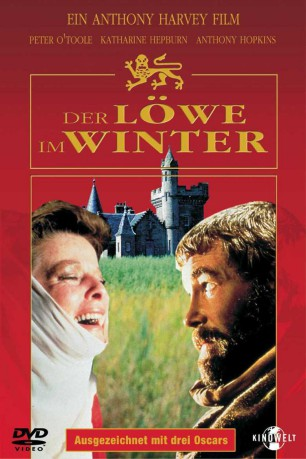
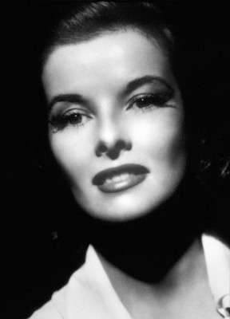

#4614 Der Löwe im Winter
Alternativ: The Lion in Winter
Auszeichnungen: 3 Oscars gewonnen für 4 Oscars nominiert 2 GoldenGlobes gewonnen 2 BAFTA-Awards gewonnen
 
 IMDB-Wertung: 8.1 / 10
IMDB-Wertung: 8.1 / 10  Metascore: 0
Metascore: 0 
Der alternde englische King Henry II. (1133 - 1189) will seine Nachfolge regeln und bringt zu Weihnachten seine Frau Eleanor, die er zehn Jahre zuvor einkerkern ließ, weil sie sich in Staatsgeschäfte mischte, ihre Söhne Richard, Geoffrey und John und seine Geliebte und deren Bruder an den Hof von Chinon. Eleanor bemüht sich um die schnelle Heirat ihres Sohnes Richard mit Henrys Geliebter. Nach Henrys Tod werden die Kämpfe unter den Söhnen noch unerbittlicher. Richard wird den Thron besteigen.
Jahr: 1968
Dauer: 134 Minuten
FSK: 16
Land: England Studio: Kinowelt Home EntertainmentTonspuren:
Untertitel:
Auflösung: 1080p (1920x816) Größe: 5672 MB
Genre: Biographie, Drama, Geschichte
Regisseur: Anthony Harvey
Drehbuch: Max Färberböck
Soundtrack:
Darsteller:
 Peter O'Toole als Henry II
Peter O'Toole als Henry II-  Katharine Hepburn als Eleanor of Aquitaine
 Anthony Hopkins als Richard
Anthony Hopkins als Richard- John Castle als Geoffrey
- Nigel Terry als John
 Timothy Dalton als Philip II
Timothy Dalton als Philip II- Jane Merrow als Alais
 Nigel Stock als William Marshal
Nigel Stock als William Marshal O.Z. Whitehead als Bishop of Durham
O.Z. Whitehead als Bishop of Durham- Kenneth Ives als Queen Eleanor's Guard
- Fran Stafford als Lady in Waiting
- Ella More als Lady in Waiting
- Kenneth Griffith als Strolling Player
- Henry Woolf als Strolling Player
- Karol Hagar als Strolling Player
- David Griffith als Strolling Player
Datei: X:\1968\Löwe im Winter, Der (1968, FSK16, 1920x816).mkv seit 24.10.2016
Festplatte: HD 1900-1970
 Es gibt insgesamt 25 Filme in der Gruppe '1968'
Es gibt insgesamt 25 Filme in der Gruppe '1968'